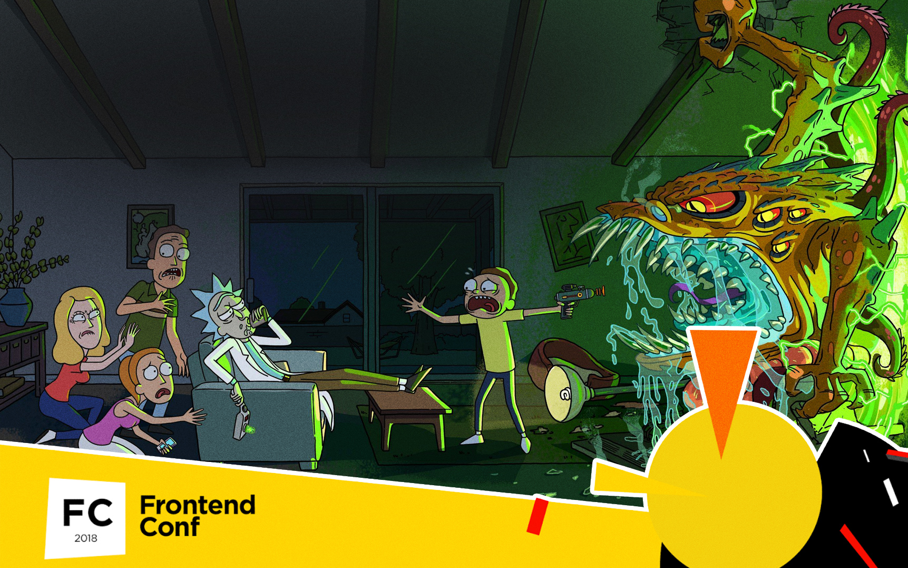

Война текстовых редакторов: рассказ очевидца
Война текстовых редакторов: рассказ очевидца
Александра Шинкевич (
@neesoglasnaja
)

Кто я?
Глава отдела фронтенда, LOVATA
Full-stack MEAN разработчик
Вернемся к динозаврам
История текстовых редакторов
История текстовых редакторов
Текстовые редакторы vs IDE
Что сравниваем
Sublime Text 3
Atom
VS Code
Web Storm
VIM
Как сравниваем: объективно
Дата первого релиза и частота обновлений
Что поддерживает из коробки
Расширяемость и кастомизируемость
Мультиязычность интерфейса
Лицензия
Как сравниваем: субъективно
Простота начала работы
Базовые HTML/CSS/JS и небольшие проекты
Фреймфорки и "синтаксический сахар"
Работа с большими проектами
Отладка, консоль, git
"Киллер-фичи"
Что общего
Мультиплатформенность
Поддерживают HTML/CSS/JS "из коробки"
Имеют системы плагинов
Хорошо кастомизируются: горячие клавиши, внешний вид, настройки
Sublime Text 3
Sublime Text 3
Первый релиз 18 января 2008
Релиз - 13 сентября 2017 (Dev Build - 11 ноября 2017)
Из коробки подсветка синтаксиса 45+ языков (включая HTML/CSS/JS)
Не имеет встроенного менеджера пакетов (можно поставить дополнительно, более 2500 расширений)
Только английский язвк интерфейса
Платный (единоразово $80), но можно не платить
Sublime Text 3
Начать работу очень просто
Действительно легкий и быстрый
Отлично подойдет для небольших базовых проектов
Для больших и сложных проектов на фреймворках многих фич будет не хватать:
Быстрые переходы между компонентами
Недостаточно умный автокомплит
Отладка, работа с консолью и git внутри редактора - боль
Sublime Text 3
Шорткаты и подсказки - только базовые подсказки
Удобство работы за рамками HTML/CSS/JS - зависит от установленных пакетов
Быстрая навигация между компонентами - через консоль поиска
Легкое форматирование кода - решается плагинами
Удобное изменение строк кода в одном файле - просто огонь
Сохранение "проектов" и быстрое переключение между ними - да, но надо отдельно хранить файлы с настройками для проекта
Sublime Text 3: выводы
Плюсы: Очень быстрый и простой
Можно использовать бесплатно
Для небольших проектов подойдет просто отлично
Минусы: Для сложных проектов - есть нюансы
Отладка, работа с консолью и git внутри редактора - никак
Быстрая навигация по компонентам с помощью клика - никак
Atom
Atom
Первый релиз 26 февраля 2014, последний - 8 марта 2018
Из коробки подсветка синтаксиса 35+ языков (включая HTML/CSS/JS)
Доступно почти 7500 расширений из встроенного пакетного менеджера
Только английский язвк интерфейса
Бесплатный, open source
Atom = Sublime Text 3
Atom != Sublime Text 3
Из-за особенности платформы иногда более медленный
Кажется немного более умным, чем Sublime Text 3
Есть баги при работе в текстом в одном файле
Atom: выводы
Плюсы: Развивающийся open source
Для небольших проектов подойдет просто отлично
Минусы: Для сложных проектов - есть нюансы
Отладка - все еще почти никак
Работа с консолью внутри редактора - есть пакеты
Git - встроенная поддержка
Быстрая навигация по компонентам с помощью клика - пакетом
Visual Studio Code
Visual Studio Code
Первый релиз 29 апреля 2015
Ежемесячные апдейты
Из коробки подсветка синтаксиса 30+ языков (включая HTML/CSS/JS)
"Умное" автодополнение для основных фронтендовых технологий
Почти 6000 расширений
Мультиязычность интерфейса
Бесплатный
Visual Studio Code
Начать работу все еще просто
Кажется более легкий и быстрый, чем Atom
Отлично подойдет для небольших базовых проектов
Под проекты на TypeScript - просто отлично из коробки
Под сложные проекты в целом неплохо, но надо устанавливать плагины
Есть встроенная отладка для Node.js приложения, работа с терминалом и git внутри редактора
Visual Studio Code: выводы
Плюсы: Развивающийся open source
Подойдет под проекты практически любой сложности; для некоторых технологий есть много встроенных бонусов
Встроенная отладка Node.js, терминал и git внутри редактора
Быстрая навигация по компонентам с помощью клика
Минусы: На очень больших проектах могут быть проблемы с производительностью при поиске
Все еще есть баги
Писать код - не главное в работе программиста
Выводы
Ссылки на тему
Вопросы?
bit.ly/MinskCSS-ETA
Александра Шинкевич (
@neesoglasnaja
)